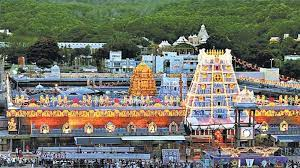
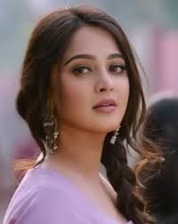

my favourite place
Venkateswara Temple is an important Vaishnavite temple situated in the hill town of Tirumala in Tirupati district of Andhra Pradesh, built by a Telugu king. The Temple is dedicated to Lord Venkateswara, an incarnation of Vishnu, who is believed to have appeared here to save mankind from the trials and troubles of Kali Yuga. The temple is situated at a height of 853 metres on Tirumala Hills which are part of Seshachalam Hills and is constructed in South Indian Architectural Style. The first recorded endowment was made by Pallava queen Samavai in the year 966 CE. She donated many jewels and two parcels of land (one 10 acres and the other 13 acres) and ordered to use the revenues generated from that land to be used for the celebration of major festivals in the temple.[1] The Pallava dynasty (9th century), the Chola dynasty (10th century), and Vijayanagara pradhans (14th and 15th centuries) were committed devotees of Lord Venkateswara. The temple gained most of its current wealth and size under the Vijayanagara Empire, with the donation of diamonds and gold.[2] In 1517, Vijayanagara Emperor Krishnadevaraya, on one of his many visits to the temple, donated gold and jewels, enabling the Ananda Nilayam (inner shrine) roofing to be gilded. After the decline of Vijayanagara Empire, leaders from states such as the Kingdom of Mysore and the Gadwal Samsthanam worshiped as pilgrims and gave ornaments and valuables to the temple.
Sweety
 src="https://www.instagram.com/anushkashettyofficial/?hl=en" alt="" width="560" height="315" />Sweety Shetty (born 7 November 1981), known by her stage name Anushka Shetty, is an Indian actress and model who predominantly works in Telugu and Tamil films.[3] She is the recipient of three Filmfare Awards South, two Nandi Awards, two SIIMA Awards and one Tamil Nadu State Film Award. Having appeared in 47 films, she is one of the highest-paid South Indian actresses[4][5] and is popularly referred as the "Superstar" of South Indian cinema. She made her acting debut with the 2005 Telugu film Super, which garnered her a Filmfare Best Supporting Actress – Telugu nomination.[9] The following year, she starred in S. S. Rajamouli's blockbuster hit Vikramarkudu. Her further releases Lakshyam (2007), Souryam (2008), and Chintakayala Ravi (2008) were also box office successes. In 2009, Shetty played dual roles in the Telugu dark fantasy film Arundhati, which led her to her first Filmfare Award for Best Actress – Telugu, and Nandi Award. The following year, Shetty's portrayal of a prostitute in the acclaimed drama Vedam won her a second consecutive Best Actress Award from Filmfar
FAVORITE HERO IS PRABHAS

Uppalapati Venkata Suryanarayana Prabhas Raju, known mononymously as Prabhas, is an Indian actor who works predominantly in Telugu films. One of the highest-paid actors of Indian cinema, Prabhas has featured in Forbes India's Celebrity 100 list three times since 2015 based on his income and popularity. He has received seven Filmfare Awards South nominations and is a recipient of the Nandi Award and the SIIMA Award. Prabhas made his acting debut with the 2002 Telugu drama Eeswar, and later attained his breakthrough with the romantic action film Varsham (2004). His notable works include Chatrapathi (2005), Bujjigadu (2008), Billa (2009), Darling (2010), Mr. Perfect (2011), and Mirchi (2013). Prabhas won the state Nandi Award for Best Actor for his performance in Mirchi. In 2015, Prabhas starred in the title role in S. S. Rajamouli's epic action film Baahubali: The Beginning, which is the fourth-highest-grossing Indian film to date. He later reprised his role in its sequel, Baahubali 2: The Conclusion (2017), which became the first Indian film ever to gross over ₹1,000 crore (US$155 million) in all languages in just ten days, and is the second highest-grossing Indian film to date.
FAVORITE HEROINE IS ANUSHKA

Sweety Shetty (born 7 November 1981), known by her stage name Anushka Shetty, is an Indian actress and model who predominantly works in Telugu and Tamil films. She is the recipient of three Filmfare Awards South, two Nandi Awards, two SIIMA Awards and one Tamil Nadu State Film Award. Having appeared in 47 films, she is one of the highest-paid South Indian actresses and is popularly referred as the "Superstar" of South Indian cinema. She made her acting debut with the 2005 Telugu film Super, which garnered her a Filmfare Best Supporting Actress – Telugu nomination. The following year, she starred in S. S. Rajamouli's blockbuster hit Vikramarkudu. Her further releases Lakshyam (2007), Souryam (2008), and Chintakayala Ravi (2008) were also box office successes. In 2009, Shetty played dual roles in the Telugu dark fantasy film Arundhati, which led her to her first Filmfare Award for Best Actress – Telugu, and Nandi Award. The following year, Shetty's portrayal of a prostitute in the acclaimed drama Vedam won her a second consecutive Best Actress Award from Filmfare.
h1FAVORITE ACTOR IS Kaikala Satyanarayana

Kaikala Satyanarayana (25 July 1935 – 23 December 2022) was an Indian actor, producer, director, and politician who predominantly worked in Telugu cinema. He appeared in more than 750 films over six decades. He was a recipient of the Raghupathi Venkaiah Award in 2011, and the Filmfare Lifetime Achievement Award in 2017.[1][2] Renowned for his acting prowess across a range of roles and genres, he was given the epithet Navarasa Natana Sarvabhouma (transl. Universal monarch of acting in nine rasas).[3] He served as the Member of Parliament in the 11th Lok Sabha representing Machilipatnam constituency from the Telugu Desam Party.[3]
Favorite Actress is Sai Pallavi

Sai Pallavi Senthamarai Kannan (born 9 May 1992), known professionally as Sai Pallavi, is an Indian actress and dancer who works primarily in Tamil, Telugu and Malayalam films. She is regarded as one of the most accomplished actresses in South Indian cinema.[3] She is the recipient of numerous accolades including four Filmfare Awards South and two South Indian International Movie Awards. Her performance was ranked by Film Companion amongst 100 Greatest Performances of the Decade.[4] She was featured by Forbes magazine as one of India's 30 under 30 in 2020.[5][6] Pallavi made her acting debut with 2015 Malayalam film Premam, which was the second highest-grossing Malayalam film till then, for which she received critical praise. She has since established herself in Telugu, Tamil and Malayalam cinema with acclaimed performances in films like Kali (2016), Fidaa (2017), Middle Class Abbayi (2017), Maari 2 (2018), Athiran (2019), Paava Kadhaigal (2020), Love Story (2021), Shyam Singha Roy (2021) and Gargi (2022).